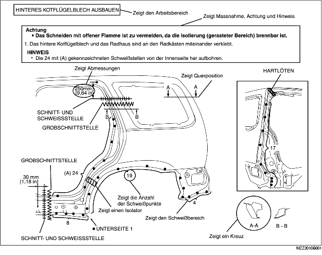
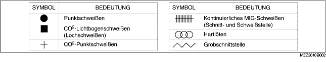
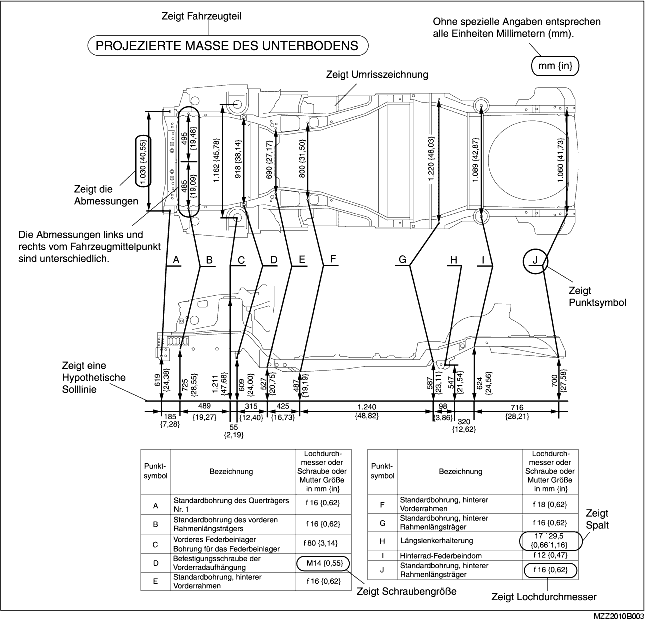
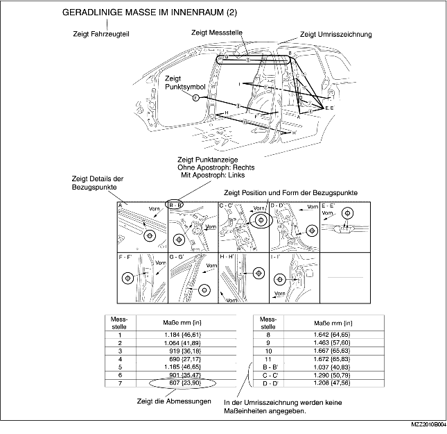
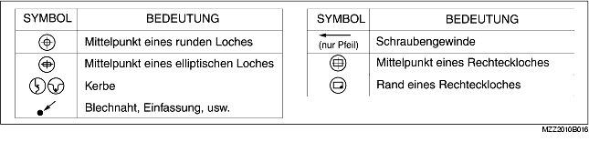

• Dieses Kapitel enthält Informationen über Karosserieteile im Hinblick auf Schweißtypen, Anzahl der Schweißpunkte und Schnitt- und Schweißstellen, die für den Aus- und Einbau der Teile notwendig sind.
• Die Schweißart und die Schweißstellen werden durch Symbole gekennzeichnet.
• Einige Abschnitte enthalten Hinweise, die die durchzuführenden Maßnahmen betreffen. Diese Hinweise müssen vor der Durchführung von Maßnahmen aufmerksam gelesen und verstanden werden.
Beispiel

• Die folgenden 6 Symbole werden verwendet, um die Schweißart anzuzeigen, die für den Austausch der Karosserieteile notwendig ist.

• Projizierte Maße sind Maße, die durch die Projektion bestimmter Bezugspunkte auf eine ebene Fläche entstehen.
• Wenn keine besonderen Angaben gemacht werden, sind die vorgegebenen Punkte und Abmessungen symmetrisch zum Mittelpunkt des Fahrzeugs.
• Die hypothetischen Linien können entsprechend dem Fahrzeugmodell abweichen.
Beispiel

• Geradlinige Maße sind die tatsächlichen Abmessungen zwischen zwei vorgegebenen Punkten.
• Wenn keine besonderen Angaben gemacht werden, sind die vorgegebenen Punkte und Abmessungen symmetrisch zum Mittelpunkt des Fahrzeugs.
Beispiel

• Die folgenden 8 Symbole werden zur Markierung der Bezugspunkte verwendet.
